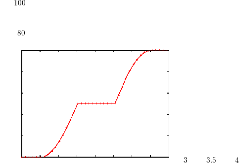

Currently urbiscript makes no assumptions about the encoding used in the programs, but the streams are handled as 8-bit characters.
While you are allowed to use whatever character you want in the string literals (especially using the binary escapes, Section 20.1.6.6), only plain ASCII characters are allowed in the program body. Invalid characters are reported, possibly escaped if they are not “printable”. If you enter UTF-8 characters, since they possibly span over several 8-bit characters, a single (UTF-8) character may be reported as several invalid (8-bit) characters.
#
Été;
[00048238:error] !!! syntax error: invalid character: ‘#’
[00048239:error] !!! syntax error: invalid character: ‘\xc3’
[00048239:error] !!! syntax error: invalid character: ‘\x89’
[00048239:error] !!! syntax error: invalid character: ‘\xc3’
[00048239:error] !!! syntax error: invalid character: ‘\xa9’
Comments are used to document the code, they are ignored by the urbiscript interpreter. Both C++ comment types are supported.
1; // This is a one line comment.
[00000001] 1
2; /* an inner comment */ 3;
[00000002] 2
[00000003] 3
4; /* nested /* comments */ 5; */ 6;
[00000004] 4
[00000005] 6
7
/*
/*
Multi-line.
*/
*/
;
[00000006] 7
While the interaction with an urbiscript kernel is usually performed via a network connection, programmers are used to work with files which have names, line numbers and so forth. This is most important in error messages. Since even loading a file actually means sending its content as if it were typed in the network session, in order to provide the user with meaningful locations in error messages, urbiscript features synclines, a means to change the “current location”, similarly to #line in C-like languages. This is achieved using special //# comments.
The following special comments are recognized only as a whole line. If some component does not match exactly the expected syntax, or if there are trailing items, the whole line is treated as a comment.
Identifiers in urbiscript are composed of one or more alphanumeric or underscore (_) characters, not starting by a digit. Additionally, identifiers must not match any of the urbiscript reserved words1 documented in Section 20.1.5. Identifiers can also be written between simple quotes (’), in which case they may contain any character.
var x;
var foobar51;
var this.a_name_with_underscores;
// Invalid because "if" is a keyword.
var if;
[00000498:error] !!! syntax error: unexpected if
obj.if();
[00013826:error] !!! syntax error: unexpected if
// However, keywords can be escaped with simple quotes.
var ’if’;
var this.’else’;
// Invalid identifiers: cannot start with a digit.
var 3x;
[00000009:error] !!! syntax error: invalid token: ‘3x’
obj.3x();
[00000009:error] !!! syntax error: invalid token: ‘3x’
// Identifiers can be escaped with simple quotes.
var ’3x’;
var ’%x’;
var ’1 2 3’;
var this.’[]’;
Keywords are reserved words that cannot be used as identifiers, for instance. They are listed in Section 20.1.
| Keyword | Remark |
| and | Synonym for && |
| and_eq | Synonym for &= |
| asm | Reserved |
| assert | Section 20.9 |
| at | Listing 20.11.1 |
| auto | Reserved |
| bitand | Section 20.1.8.4 |
| bitor | Section 20.1.8.4 |
| bool | Reserved |
| break | Listing 20.7.1 |
| call | Section 20.3.3 |
| case | Listing 20.7.10 |
| catch | Section 20.8.2, Listing 20.10.7 |
| char | Reserved |
| class | Section 20.1.6.8 |
| closure | Section 20.3.6 |
| compl | Section 20.1.8.4 |
| const | Section 20.4.2 |
| const_cast | Reserved |
| continue | Listing 20.7.2 |
| default | Listing 20.7.10 |
| delete | Reserved |
| detach | |
| disown | |
| do | Listing 20.7.3 |
| double | Reserved |
| dynamic_cast | Reserved |
| else | Listing 20.7.8 |
| enum | Listing 20.7.2 |
| every | Listing 20.10.2 |
| explicit | Reserved |
| export | Reserved |
| extern | Reserved |
| external | Reserved |
| float | Reserved |
| for | for& and for| flavors |
| foreach | Deprecated, use for |
| freezeif | |
| friend | Reserved |
| function | Section 20.3.1, Section 20.3.6 |
| goto | Reserved |
| if | Listing 20.7.8 |
| in | Listing 20.7.6 |
| inline | Reserved |
| int | Reserved |
| internal | Deprecated |
| long | Reserved |
| loop | loop&, loop|, Listing 20.7.9 |
| mutable | Reserved |
| namespace | Reserved |
| new | Section 7.5 |
| not | Synonym for ! |
| not_eq | Synonym for != |
| onleave | Listing 20.11.1 |
| or | Synonym for || |
| or_eq | Synonym for |= |
| private | Ignored |
| protected | Ignored |
| public | Ignored |
| register | Reserved |
| reinterpret_cast | Reserved |
| return | Section 20.3.3 |
| short | Reserved |
| signed | Reserved |
| sizeof | Reserved |
| static | Deprecated |
| static_cast | Reserved |
| stopif | |
| struct | Reserved |
| switch | Listing 20.7.10 |
| template | Reserved |
| this | |
| throw | Section 20.8.1 |
| timeout | Listing 20.10.7 |
| try | Section 20.8.2 |
| typedef | Reserved |
| typeid | Reserved |
| typename | Reserved |
| union | Reserved |
| unsigned | Reserved |
| using | Reserved |
| var | Section 20.2.2, Section 20.4.1 |
| virtual | Reserved |
| volatile | Reserved |
| waituntil | Listing 20.11.2 |
| watch | Listing 20.11.3 |
| wchar_t | Reserved |
| whenever | Listing 20.11.4 |
| while | while& and while| flavors |
| xor | Synonym for ^ |
| xor_eq | Synonym ^= |
Angles are floats (see Section 20.1.6.4) followed by an angle unit. They are simply equivalent to the same float, expressed in radians. For instance, 180deg (180 degrees) is equal to pi. Available units and their equivalent are presented in Listing 20.2.
| unit | abbreviation | equivalence for n |
| radian | rad | n |
| degree | deg | n∕180 ∗ π |
| grad | grad | n∕200 ∗ π |
Literal dictionaries are represented with a comma-separated, potentially empty list of arbitrary associations enclosed in square brackets ([]), as shown in the listing below. Empty dictionaries are represented with an association arrow between the brackets to avoid confusion with empty lists. See Dictionary for more details.
Each association is composed of a key, which is represented by a string, an arrow (=>) and an expression.
[ => ]; // The empty dictionary
[00000000] [ => ]
["a" => 1, "b" => 2, "c" => 3];
[00000000] ["a" => 1, "b" => 2, "c" => 3]
["one" => 1, "one" => 2];
[00000001:error] !!! duplicate dictionary key: "one"
Durations are floats (see Section 20.1.6.4) followed by a time unit. They are simply equivalent to the same float, expressed in seconds. For instance, 1s 1ms, which stands for “one second and one millisecond”, is strictly equivalent to 1.0001. Available units and their equivalent are presented in Listing 20.3.
| unit | abbreviation | equivalence for n |
| millisecond | ms | n∕1000 |
| second | s | n |
| minute | min | n × 60 |
| hour | h | n × 60 × 60 |
| day | d | n × 60 × 60 × 24 |
1d == 24h;
0.5d == 12h;
1h == 60min;
1min == 60s;
1s == 1000ms;
1s == 1;
1s 2s 3s == 6;
1s 1ms == 1.001;
1ms 1s == 1.001;
urbiscript supports the scientific notation for floating-point literals. See Float for more details. Examples include:
1 == 1;
1 == 1.0;
1.2 == 1.2000;
1.234e6 == 1234000;
1e+11 == 1E+11;
1e10 == 10000000000;
1e30 == 1e10 * 1e10 * 1e10;
Numbers are displayed rounded by the top level, but internally, as seen above, they keep their accurate value.
0.000001;
[00000011] 1e-06
0.0000001;
[00000012] 1e-07
0.00000000001;
[00000013] 1e-11
1e+3;
[00000014] 1000
1E-5;
[00000014] 1e-05
In order to tell apart numbers with units (‘1min’) and calling a method on a number (‘1.min’), numbers that include a period must have a fractional part. In other words, ‘1.’, if not followed by digits, is always read as ‘1 .’:
Hexadecimal notation is supported for integers: 0x followed by one or more hexadecimal digits, whose case is irrelevant.
Numbers with unknown suffixes are invalid tokens:
123foo;
[00005658:error] !!! syntax error: invalid token: ‘123foo’
12.3foo;
[00018827:error] !!! syntax error: invalid token: ‘12.3foo’
0xabcdef;
[00060432] 11259375
0xabcdefg;
[00061848:error] !!! syntax error: invalid token: ‘0xabcdefg’
In order to augment readability, you may separate digits with underscores.
123_456_789 == 123456789;
12_34_56_78_90 == 1234567890;
1_2__3___45 == 12345;
1_2.3__4 == 12.34;
0xFFFF_FFFF == 0xFFFFFFFF;
1e1_0 == 1e10;
The underscores must always be between digits.
// This is actually an identifier.
_0__2;
[00000112:error] !!! lookup failed: _0__2
20_;
[00029616:error] !!! syntax error: invalid token: ‘20_’
// This is actually a call to the method ‘_2’ in 1.
1._2;
[00029653:error] !!! lookup failed: _2
1.2_;
[00029654:error] !!! syntax error: invalid token: ‘1.2_’
0x_12;
[00116580:error] !!! syntax error: invalid token: ‘0x_12’
0_x12;
[00116582:error] !!! syntax error: invalid token: ‘0_x12’
1e_10;
[00253832:error] !!! syntax error: invalid token: ‘1e_10’
1e10_;
[00257727:error] !!! syntax error: invalid token: ‘1e10_’
Literal lists are represented with a comma-separated, potentially empty list of arbitrary expressions enclosed in square brackets ([]), as shown in the listing below. See List for more details.
String literals are enclosed in double quotes (") and can contain arbitrary characters, which stand for themselves, with the exception of the escape character, backslash (\), see below. The escapes sequences are defined in Listing 20.4.
| \\ | backslash |
| \" | double-quote |
| \a | bell ring |
| \b | backspace |
| \f | form feed |
| \n | line feed |
| \r | carriage return |
| \t | tabulation |
| \v | vertical tabulation |
| \[0-7\]{1,3} | eight-bit character corresponding to a one-, two- or three-digit octal number. For instance, \0, \000 and 177. The matching is greedy: as many digits as possible are taken: \0, \000 are both resolved in the null character. |
| \x[0-9a-fA-F]{2} | eight-bit character corresponding to a two-digit hexadecimal number. For instance, 0xfF. |
| \B(length)(content) | binary blob. A length-long sequence of verbatim content. length is expressed in decimal. content is not interpreted in any way. The parentheses are part of the syntax, they are mandatory. For instance \B(2)(\B) |
// Special characters.
"\"" == "\"";
"\\" == "\\";
// ASCII characters.
"\a" == "\007"; "\a" == "\x07";
"\b" == "\010"; "\b" == "\x08";
"\f" == "\014"; "\f" == "\x0c";
"\n" == "\012"; "\n" == "\x0a";
"\r" == "\015"; "\r" == "\x0d";
"\t" == "\011"; "\t" == "\x09";
"\v" == "\013"; "\v" == "\x0b";
// Octal escapes.
"\0" == "\00"; "\0" == "\000";
"\0000" == "\0""0";
"\062\063" == "23";
// Hexadecimal escapes.
"\x00" == "\0";
"\x32\x33" == "23";
// Binary blob escape.
"\B(3)("\")" == "\"\\\"";
Invalid escapes are errors.
"\h\777\ ";
[00000002:error] !!! syntax error: invalid character after \-escape: ‘h’
[00000005:error] !!! syntax error: invalid number after \-escape: ‘777’
[00000004:error] !!! syntax error: invalid character after \-escape: ‘ ’
Consecutive string literals are glued together into a single string. This is useful to split large strings into chunks that fit usual programming widths.
The interpreter prints the strings escaped; for instance, line feed will be printed out as \n when a string result is dumped and so forth. An actual line feed will of course be output if a string content is printed with echo for instance.
"";
[00000000] ""
"foo";
[00000000] "foo"
"a\nb"; // urbiscript escapes string when dumping them
[00000000] "a\nb"
echo("a\nb"); // We can see there is an actual line feed
[00000000] *** a
b
echo("a\\nb");
[00000000] *** a\nb
See String for more details.
Literal tuples are represented with a comma-separated, potentially empty list of arbitrary elements enclosed in parenthesis (()), as shown in the listing below. One extra comma can be added after the last element. To avoid confusion between a 1 member Tuple and a parenthesized expression, the extra comma must be added. See Tuple for more details.
();
[00000000] ()
(1,);
[00000000] (1,)
(1, 2);
[00000000] (1, 2)
(1, 2, 3, 4,);
[00000000] (1, 2, 3, 4)
Objects meant to serve as prototypes are best defined using the class construct. See also the tutorial, Section 7.4.
This results in the (constant) definition of the name lvalue in the current context (class construct can be used inside a scope or in an object) with:
class Base
{
var slot = 12;
}|;
assert
{
hasLocalSlot("Base");
Base.type == "Base";
Base.protos == [Object];
Base.slot == 12;
Base.asBase() === Base;
};
class Global.Derive : Base
{
var slot = 34;
}|;
assert
{
Global.hasLocalSlot("Derive");
Global.Derive.type == "Derive";
Global.Derive.protos == [Base];
Global.Derive.slot == 34;
Global.Derive.asDerive() === Global.Derive;
Global.Derive.asBase() === Global.Derive;
};
class Base2 {}|;
class Derive2 : Base, Base2 {}|;
assert
{
Derive2.type == "Derive2";
Derive2.protos == [Base, Base2];
Derive2.slot == 12;
Derive2.asDerive2() === Derive2;
Derive2.asBase() === Derive2;
Derive2.asBase2() === Derive2;
};
It is guaranteed that the expressions that define the class name and its parents are evaluated only once.
function verboseId(var x)
{
echo(x) | x
}|;
class verboseId(Global).math : verboseId(Math)
{
};
[00000686] *** Global
[00000686] *** Math
[00000686] math
Sequential languages such as C++ support a single way to compose two statements: the sequential composition, “denoted” by ‘;’. To support concurrency and more fined tuned sequentiality, urbiscript features four different statement-separators (or connectors):
The ‘;’-connector waits for the first statement to finish before starting the second statement. When used in the top-level interactive session, both results are displayed.
The ‘,’-connector sends the first statement in background for concurrent execution, and starts the second statement when possible. When used in interactive sessions, the value of back-grounded statements are not printed — the time of their arrival being unpredictable, such results would clutter the output randomly. Use Channels or Events to return results asynchronously.
{
for (3)
{
sleep(1s);
echo("ping");
},
sleep(0.5s);
for (3)
{
sleep(1s);
echo("pong");
},
};
[00000316] *** ping
[00000316] *** pong
[00000316] *** ping
[00000316] *** pong
[00000316] *** ping
[00000316] *** pong
Both ‘;’ and ‘,’ have equal precedence. They are scoped too: the execution follow “waits” for the end of the jobs back-grounded with ‘,’ before proceeding. Compare the two following executions.
{
sleep(100ms) | echo("1"),
sleep(400ms) | echo("2"),
echo("done");
};
[00000316] *** done
[00000316] *** 1
[00000316] *** 2
{
sleep(100ms) | echo("1"),
sleep(400ms) | echo("2"),
};
echo("done");
[00000316] *** 1
[00000316] *** 2
[00000316] *** done
When using the ‘;’ connector, the scheduler is allowed to run other commands between the first and the second statement. The ‘|’ does not yield between both statements. It is therefore more efficient, and, in a way, provides some atomicity for concurrent tasks.
{
{ echo("11") ; sleep(100ms) ; echo("12") },
{ echo("21") ; sleep(400ms) ; echo("22") },
};
[00000316] *** 11
[00000316] *** 21
[00000316] *** 12
[00000316] *** 22
{
{ echo("11") | echo("12") },
{ echo("21") | echo("22") },
};
[00000316] *** 11
[00000316] *** 12
[00000316] *** 21
[00000316] *** 22
In an interactive session, both statements must be “known” before launching the sequence. The value of the composed statement is the value of the second statement.
The ‘&’ is very similar to the ‘,’ connector, but for its precedence. Urbi expects to process the whole statement before launching the connected statements. This is especially handy in interactive sessions, as a means to fire a set of tasks concurrently.
urbiscript supports many operators, most of which are inspired from C++. Their syntax is presented here, and they are sorted and described with their original semantics — that is, + is an arithmetic operator that sums two numeric values. However, as in C++, these operators might be used for any other purpose — for instance, + is also used to concatenate lists and strings. Their semantics is thus not limited to what is presented here.
Tables in this section sort operators by decreasing precedence order. Group of rows (not separated by horizontal lines) describe operators that have the same precedence. Many operators are syntactic sugar that bounce on a method call. In this case, the equivalent desugared expression is shown in the “Equivalence” column. To define an operator for an object, override the corresponding method (see Section 7.6).
This section defines the syntax (what they look like), precedence and associativity of the operators. Their semantics (what they actually do) is described in Listing 21 in the documentation of the classes that provide them.
urbiscript supports classic arithmetic operators, with the classic semantics on numeric values. See Section 20.5 and the listing below.
| Operator | Syntax | Associativity | Semantics | Equivalence |
| ** | a ** b | Right | Exponentiation | a.’**’(b) |
| + | +a | - | Identity | a.’+’() |
| - | -a | - | Opposite | a.’-’() |
| * | a * b | Left | Multiplication | a.’*’(b) |
| / | a / b | Left | Division | a.’/’(b) |
| % | a % b | Left | Modulo | a.’%’(b) |
| + | a + b | Left | Sum | a.’+’(b) |
| - | a - b | Left | Difference | a.’-’(b) |
1 + 1 == 2;
1 - 2 == -1; 1 - 2 - 3 == (1 - 2) - 3 != 1 - (2 - 3);
2 * 3 == 6;
10 / 2 == 5; 6 / 3 / 2 == (6 / 3) / 2 != 6 / (3 / 2);
2 ** 10 == 1024; 2 ** 3 ** 2 == 2 ** (3 ** 2) != (2 ** 3) ** 2;
-(1 + 2) == -3;
1 + 2 * 3 == 7;
(1 + 2) * 3 == 9;
-2 ** 2 == -4 == -(2 ** 2) != (-2) ** 2;
- - - - 1 == 1;
Assignment in urbiscript can be performed with the = operator. Assignment operators, such as +=, are supported too, see Listing 20.6 and the examples below.
| Operator | Syntax | Associativity | Semantics | Equivalence |
| = | a = b | Right | Assignment | updateSlot("a", b) 2 |
| += | a += b | Right | In place + | a = a.’+=’(b) |
| -= | a -= b | Right | In place - | a = a.’-=’(b) |
| *= | a *= b | Right | In place * | a = a.’*=’(b) |
| /= | a /= b | Right | In place / | a = a.’/=’(b) |
| %= | a %= b | Right | In place % | a = a.’%=’(b) |
| ^= | a ^= b | Right | In place | a = a.’^=’(b) |
The following example demonstrates that a += b behaves as a = a + b for Floats.
These operators are redefinable. Indeed, a += b is actually processed as a = a.’+=’(b). This definition, which is neither that of C (a = a.’+’(b)) nor that of C++ (a.’+=’(b)), provides support for both immutable and mutable values.
Immutable Values Small objects such as Floats should typically be immutable, i.e., the value of a Float cannot change:
It would be traitorous for most users that valueAlias be equal to 10 too. That’s why Float.’+=’ (which is actually Object.’+=’) simply bounces to Float.’+’. The “net result” of value += 10 is therefore value = value.’+’(10), i.e., a new Float is computed from 0.’+’(10), and value is rebound to it. The binding from valueAlias to 0 is left as is.
Mutable Values On the contrary, large, “updatable” objects should provide an implementation of ’+=’ that mutates them. For instance, implementing a.’+=’(b) as a.’+’(b) would be too costly for Lists. Each time += is used, we need to create a new List (whose content is that of a), then to append the contents of b, and finally throw away the former value of a.
Not only is this inefficient, this is also wrong (at least from a certain point of view). Indeed, since we no longer update the List pointed to by a, but rather store a new List, everything that was special to the original List (its uid or whatever special slot the user may have defined) is lost. The proper implementation of List.’+=’ is therefore to modify this by appending the added members.
var myList = []|;
var myList.specialFeature = 42|;
myList += [1, 2, 3];
[00848865] [1, 2, 3]
myList.specialFeature;
[00848869] 42
var myOtherList = myList + [4, 5];
[00848873] [1, 2, 3, 4, 5]
myOtherList.specialFeature;
[00848926:error] !!! lookup failed: specialFeature
Note however that this means that because a += b is not processed as a = a + b, aliases to a are possibly modified.
var something = []|;
var somethingElse = something|;
something += [1, 2];
[00008557] [1, 2]
somethingElse += [3, 4];
[00008562] [1, 2, 3, 4]
something;
[00008566] [1, 2, 3, 4]
Example So basically, the rules to redefine these operators are:
The following examples contrasts both approaches.
class Counter
{
var count = 0;
function init (n) { var this.count = n };
// Display the value, and the identity.
function asString() { "%s @ %s" % [count, uid ] };
function ’+’(var n) { new(count + n) };
function ’-’(var n) { new(count - n) };
}|;
In the tradition of C, urbiscript provides pre- and postfix increment and decrement operators (Listing 20.7): ++a and a++.
| Operator | Syntax | Associativity | Semantics | Equivalence |
| ++ | ++a | - | Pre-incrementation | a = a.’++’ |
| -- | --a | - | Pre-decrementation | a = a.’--’ |
| ++ | a++ | - | Post-incrementation | {var ’$a’ = a | ++a | ’$a’} |
| -- | a-- | - | Post-decrementation | {var ’$a’ = a | --a | ’$a’} |
Prefix operators modify their operand and evaluate to the new value, whereas postfix operators evaluate to the former value.
These operators modify the variable/slot they are applied to
var count = 5;
var alias = count;
alias = count; count++ == 5; count == 6; alias == 5; count !== alias;
alias = count; count++ == 6; count == 7; alias == 6; count !== alias;
alias = count; count-- == 7; count == 6; alias == 7; count !== alias;
alias = count; --count == 5; count == 5; alias == 6; count !== alias;
alias = count; ++count == 6; count == 6; alias == 5; count !== alias;
Similarly to assignment operators, these operators are redefinable. Indeed, ++a is actually processed like a = a.’++’, and a++ is actually processed like { var ’$save’ = a | ++a | ’$save’ } (which, in turn, is like { var ’$save’ = a | a = a.’++’ | ’$save’ }). In other words, you are entitled to redefine the operator ’++’ whose semantics is “return the successor of this”.
Beware that the function ’++’ should not modify its target, but rather return a fresh value. Indeed, if it alters this, the copy made in ’\$save’ will also have its value updated. In other words, the value of a++ would be its new one, not its former one.
urbiscript features bitwise operators. They are also used for other purpose than bit-related operations. See Section 20.8 and the listing below.
| Operator | Syntax | Associativity | Semantics | Equivalence |
| compl | compl a | - | Bitwise complement | a.’compl’() |
| << | a << b | Left | Left bit shift | a.’<<’(b) |
| >> | a >> b | Left | Right bit shift | a.’>>’(b) |
| bitand | a bitand b | Left | Bitwise and | a.’bitand’(b) |
| ^ | a ^ b | Left | Bitwise exclusive or | a.’^’(b) |
| bitor | a bitor b | Left | Bitwise or | a.’bitor’(b) |
4 << 2 == 16;
4 >> 2 == 1;
compl 0x0F0F_F0F0 == 0xF0F0_0F0F;
0x0000 bitand 0xF0F0 == 0x0000;
0x0F0F bitand 0xF0F0 == 0x0000;
0xF0F0 bitand 0xF0F0 == 0xF0F0;
0xFFFF bitand 0xF0F0 == 0xF0F0;
0x0000 bitor 0xF0F0 == 0xF0F0;
0x0F0F bitor 0xF0F0 == 0xFFFF;
0xF0F0 bitor 0xF0F0 == 0xF0F0;
0xFFFF bitor 0xF0F0 == 0xFFFF;
0x0000 ^ 0xF0F0 == 0xF0F0;
0x0F0F ^ 0xF0F0 == 0xFFFF;
0xF0F0 ^ 0xF0F0 == 0x0000;
0xFFFF ^ 0xF0F0 == 0x0F0F;
urbiscript supports the usual Boolean operators. See the table and the listing below. The operators && and || are short-circuiting: their right-hand side is evaluated only if needed.
| Operator | Syntax | Associativity | Semantics | Equivalence |
| ! | !a | Left | Logical negation | a.’!’() |
| && | a&&b | Left | Logical and | if (a) b else a |
| || | a||b | Left | Logical or | if (a) a else b |
The operator ! returns the Boolean that is the negation of the value of its operand. See Object.’!’.
!true === false; !false === true;
!42 === false; !0 === true;
!"42" === false; !"" === true;
![42] === false; ![] === true;
!["4"=>2] === false; ![=>] === true;
The operator &&, the short-circuiting logical and, behaves as follows. If the left-hand side operand evaluates to a “true” value, return the evaluation of the right-hand side operand; otherwise return the value of the left-hand side operand (not necessarily false).
true && true; !(true && false); !(false && true); !(false && false);
(0 && "foo") == 0;
(2 && "foo") == "foo";
("" && "foo") == "";
("foo" && "bar") == "bar";
Its arguments are evaluated at most once.
var zero = 0|;
var one = 1|;
var two = 2|;
// First argument evaluated once, second is not needed.
({ echo("lhs") | zero } && { echo("rhs") | one }) === zero;
[00029936] *** lhs
[00029936] true
({ echo("lhs") | one } && { echo("rhs") | two }) === two;
[00029966] *** lhs
[00029966] *** rhs
[00029966] true
The operator ||, the short-circuiting logical or, behaves as follows. If the left-hand side operand evaluates to a “false” value, return the evaluation of the right-hand side operand; otherwise return the value of the left-hand side argument (not necessarily true).
true || false; true || true; false || true; !(false || false);
(0 || "foo") == "foo";
(2 || 1/0) == 2;
("" || "foo") == "foo";
("foo" || 1/0) == "foo";
var zero = 0|;
var one = 1|;
var two = 2|;
// First argument evaluated once, second is not needed.
({ echo("lhs") | one } || { echo("rhs") | two }) === one;
[00029936] *** lhs
[00029936] true
({ echo("lhs") | zero } || { echo("rhs") | one }) === one;
[00029966] *** lhs
[00029966] *** rhs
[00029966] true
See Section 21.3.1 for more information about “true” and “false” values.
urbiscript supports classical comparison operators, plus a few of its own. See Section 20.10 and the listing below.
| Operator | Syntax | Associativity | Semantics | Equivalence |
| == | a == b | Left | Equality | a.’==’(b) |
| != | a != b | Left | Inequality | a.’!=’(b) |
| === | a === b | Left | Physical equality | a.’===’(b) |
| !== | a !== b | Left | Physical inequality | a.’!==’(b) |
| ∼= | a ∼= b | Left | Relative approximate equality | a.’∼=’(b) |
| =∼= | a =∼= b | Left | Absolute approximate equality | a.’=∼=’(b) |
| < | a < b | Left | Less than | a.’<’(b) |
| <= | a <= b | Left | Less than or equal to | a.’<=’(b) |
| > | a > b | Left | Greater than | a.’>’(b) |
| >= | a >= b | Left | Greater than or equal to | a.’>=’(b) |
For a description of the semantics of these operators, see their definition as slots of Object.
The comparisons can be chained, e.g., var{a} < b <= c, in which case:
In other words, var{a} < b <= c is equivalent to var{a} < b && b <= c with the guaranty that b is not evaluated twice. Any sequence of comparison is valid, even those that mathematicians would not write (e.g., a < b > c == d).
function v(x) { echo(x) | x }|;
v(1) < v(2) <= v(3) != v(4) == v(4) > v(0) >= v(0) !== v(Global) === v(Global);
[00000010] *** 1
[00000010] *** 2
[00000010] *** 3
[00000010] *** 4
[00000010] *** 4
[00000010] *** 0
[00000010] *** 0
[00000010] *** Global
[00000010] *** Global
[00000010] true
v(1) == v(2) < v(3) < v(4);
[00033927] *** 1
[00033927] *** 2
[00033927] false
v(1) == v(2) < v(3) < v(4) || v(10) < v(11) < v(12);
[00033933] *** 1
[00033933] *** 2
[00033933] *** 10
[00033933] *** 11
[00033933] *** 12
[00033933] true
These operators work on containers and their members. See Section 20.11.
| Operator | Syntax | Associativity | Semantics | Equivalence |
| [] | a[args] | Left | Subscript | a.’[]’(args) |
| [] = | a[args] = v | Right | Subscript assignment | a.’[]=’(args, v) |
| in | a in b | None | Membership | b.has(a) |
| not in | a not in b | None | Non-membership | b.hasNot(a) |
The in and not in operators test the membership of an element in a container. They bounce to the container’s has and hasNot methods (see Container. They are non-associative.
1 in [0, 1, 2];
3 not in [0, 1, 2];
"one" in ["zero" => 0, "one" => 1, "two" => 2];
"three" not in ["zero" => 0, "one" => 1, "two" => 2];
The following operators use an index. Note that the subscript (square bracket) operator is variadic: it takes any number of arguments that will be passed to the ’[]’ method of the targeted object.
// On lists.
var l = [1, 2, 3, 4, 5];
l[0] == 1;
l[-1] == 5;
(l[0] = 10) == 10;
l == [10, 2, 3, 4, 5];
// On strings.
var s = "abcdef";
s[0] == "a";
s[1,3] == "bc";
(s[1,3] = "foo") == "foo";
s == "afoodef";
These core operators provide access to slots and their properties. See Section 20.12.
| Operator | Syntax | Associativity | Semantics | Equivalence |
| . | a.b | Left | Message sending | Not redefinable |
| . | a.b(args) | Left | Message sending | Not redefinable |
| -> | a->b | Left | Property access | getProperty("a", "b") |
| -> | a->b = v | Right | Property assignment | setProperty("a", "b", v) |
| & | &a | - | Slot access | getSlot("a") |
| .& | a.&b | Left | Slot access | a.getSlot("b") |
var obj = Object.new();
var obj.f = function() { 24 };
obj.f() == 24;
obj.&f != 24;
obj.&f.isA(Slot);
obj.&f === obj.getSlot("f");
Section 20.13 is a summary of all operators, to highlight the overall precedences. Operators are sorted by decreasing precedence. Groups of rows represent operators with the same precedence.
| Operator | Syntax | Associativity | Semantics | Equivalence |
| . | a.b | Left | Message sending | Not redefinable |
| . | a.b(args) | Left | Message sending | Not redefinable |
| -> | a->b | Left | Property access | getProperty("a", "b") |
| -> | a->b = v | Right | Property assignment | setProperty("a", "b", v) |
| & | &a | - | Slot access | getSlot("a") |
| .& | a.&b | Left | Slot access | a.getSlot("b") |
| [] | a[args] | Left | Subscript | a.’[]’(args) |
| [] = | a[args] = v | Right | Subscript assignment | a.’[]=’(args, v) |
| ** | a ** b | Right | Exponentiation | a.’**’(b) |
| compl | compl a | - | Bitwise complement | a.’compl’() |
| + | +a | - | Identity | a.’+’() |
| - | -a | - | Opposite | a.’-’() |
| ! | !a | Left | Logical negation | a.’!’() |
| * | a * b | Left | Multiplication | a.’*’(b) |
| / | a / b | Left | Division | a.’/’(b) |
| % | a % b | Left | Modulo | a.’%’(b) |
| + | a + b | Left | Sum | a.’+’(b) |
| - | a - b | Left | Difference | a.’-’(b) |
| << | a << b | Left | Left bit shift | a.’<<’(b) |
| >> | a >> b | Left | Right bit shift | a.’>>’(b) |
| bitand | a bitand b | Left | Bitwise and | a.’bitand’(b) |
| ^ | a ^ b | Left | Bitwise exclusive or | a.’^’(b) |
| bitor | a bitor b | Left | Bitwise or | a.’bitor’(b) |
| == | a == b | Left | Equality | a.’==’(b) |
| != | a != b | Left | Inequality | a.’!=’(b) |
| === | a === b | Left | Physical equality | a.’===’(b) |
| !== | a !== b | Left | Physical inequality | a.’!==’(b) |
| =∼= | a =∼= b | Left | Absolute approximate equality | a.’=∼=’(b) |
| ∼= | a ∼= b | Left | Relative approximate equality | a.’∼=’(b) |
| < | a < b | Left | Less than | a.’<’(b) |
| <= | a <= b | Left | Less than or equal to | a.’<=’(b) |
| > | a > b | Left | Greater than | a.’>’(b) |
| >= | a >= b | Left | Greater than or equal to | a.’>=’(b) |
| in | a in b | None | Membership | b.has(a) |
| not in | a not in b | None | Non-membership | b.hasNot(a) |
| && | a&&b | Left | Logical and | if (a) b else a |
| || | a||b | Left | Logical or | if (a) a else b |
| = | a = b | Right | Assignment | updateSlot("a", b) |
| += | a += b | Right | In place + | a = a.’+=’(b) |
| -= | a -= b | Right | In place - | a = a.’-=’(b) |
| *= | a *= b | Right | In place * | a = a.’*=’(b) |
| /= | a /= b | Right | In place / | a = a.’/=’(b) |
| %= | a %= b | Right | In place % | a = a.’%=’(b) |
| ^= | a ^= b | Right | In place | a = a.’^=’(b) |
| ++ | ++a | - | Pre-incrementation | a = a.’++’ |
| -- | --a | - | Pre-decrementation | a = a.’--’ |
| ++ | a++ | - | Post-incrementation | {var ’$a’ = a | ++a | ’$a’} |
| -- | a-- | - | Post-decrementation | {var ’$a’ = a | --a | ’$a’} |
Scopes are sequences of statements, enclosed in curly brackets ({}). Statements are separated with the four statements separators (see Section 20.1.7). A trailing ‘;’ or ‘,’ is ignored. A trailing ‘&’ or ‘|’ behaves as if & {} or | {} was used. This particular case is heavily used by urbiscript programmers to discard the value of an expression:
// Return value is 1. Displayed.
1;
[00000000] 1
// Return value is that of {}, i.e., void. Nothing displayed.
1 | {};
// Same as "1 | {}", a valueless expression.
1|;
Scopes are themselves expressions, and can thus be used in composite expressions, nested, and so forth.
// Scopes evaluate to their last expression
{
1;
2;
3; // This last separator is optional.
};
[00000000] 3
// Scopes can be used as expressions
{1; 2; 3} + 1;
[00000000] 4
Local variables are introduced with the var keyword, followed by an identifier (see Section 20.1.4) and an optional initialization value assignment. If the initial value is omitted, it defaults to void. Variable declarations evaluate to the initialization value. They can later be referred to by their name. Their value can be changed with the assignment operator; such an assignment expression returns the new value. The use of local variables is illustrated below.
// This declare variable x with value 42, and evaluates to 42.
var t = 42;
[00000000] 42
// x equals 42
t;
[00000000] 42
// We can assign it a new value
t = 51;
[00000000] 51
t;
[00000000] 51
// Initialization defaults to void
var u;
u.isVoid;
[00000000] true
The lifespan of local variables is the same as their enclosing scope. They are thus only accessible from their scope and its sub-scopes3 . Two variables with the same name cannot be defined in the same scope. A variable with the same name can be defined in an inner scope, in which case references refer to the innermost variable, as shown below.
{
var x = "x";
var y = "outer y";
{
var y = "inner y";
var z = "z";
// We can access variables of parent scopes.
echo(x);
// This refers to the inner y.
echo(y);
echo(z);
};
// This refers to the outer y.
echo(y);
// This would be invalid: z does not exist anymore.
// echo(z);
// This would be invalid: x is already declared in this scope.
// var x;
};
[00000000] *** x
[00000000] *** inner y
[00000000] *** z
[00000000] *** outer y
Functions in urbiscript are first class citizens: a function is a value, like floats and strings, and can be handled as such. This is different from most C-like languages. The syntax to declare named or anonymous functions is a follows:
In words: One can create an anonymous function thanks to the function keyword (or closure, see Section 20.3.6), followed by the list of formal arguments and a block representing the body of the function. Formal arguments are a possibly-empty comma-separated list of identifiers. Non-empty lists of formal arguments may optionally end with a trailing comma. The listing below illustrates this.
function () { echo(0) }|;
function (arg1, arg2) { echo(0) }|;
function (
arg1, // Ignored argument.
arg2, // Also ignored.
)
{
echo(0)
}|;
Declaring a named function is actually strictly equivalent to binding a variable to the corresponding anonymous function:
// Functions are often stored in variables to call them later.
const var f1 = function () { "hello" }|
// This form is strictly equivalent, yet simpler.
function f2() { "hello" }|
assert (f1() == f2());
Therefore, like regular values, functions can either be plain local variables or slots of objects. In the following example, initially the object Foo features neither a foo nor a bar slot, but its init function declares a local foo function, and a slot bar. The whole difference is the initial this in the definition of bar which makes it a slot, not a variable.
class Foo
{
function init()
{
// This is a function local to init().
function foo() { 42 };
function this.bar() { 51 };
foo() + bar();
};
}|;
Foo.foo();
[00001720:error] !!! lookup failed: foo
Foo.bar();
[00001750:error] !!! lookup failed: bar
[00001787] 93
Foo.init();
Foo.foo();
[00001787:error] !!! lookup failed: foo
Foo.bar();
[00001818] 51
The list of formal arguments defines the number of argument the function requires. They are accessible by their name from within the body. If the list of formal arguments is omitted, the number of effective arguments is not checked, and arguments themselves are not evaluated. Arguments can then be manipulated with the call message, explained below.
var f = function(a, b) {
echo(b + a);
}|
f(1, 0);
[00000000] *** 1
// Calling a function with the wrong number of argument is an error.
f(0);
[00000000:error] !!! f: expected 2 arguments, given 1
f(0, 1, 2);
[00000000:error] !!! f: expected 2 arguments, given 3
Non-empty lists of effective arguments may end with an optional comma.
Arguments may have a default value specified at the declaration point, and are thus optional when calling the function:
f = function(x, y=10, z=100) { x+y+z}|;
f();
[00000001:error] !!! f: expected between 1 and 3 arguments, given 0
f(2);
[00000002] 112
f(2, 30);
[00000003] 132
f(2, 30, 400);
[00000004] 432
Arguments can be constrained to a given type using the argname: type syntax. Urbi will check that the argument inherits from type and throw an error if it is not the case.
f = function(x: Float) {x}|;
f(1);
[00000001] 1
f("foo");
[00000002:error] !!! f: argument 1: unexpected "foo", expected a Float
f = function(x: 1) {x}|;
f(1);
[00000002:error] !!! f: argument 1: unexpected 1, expected a Float
// It did not work because 1 does not inherit from "1",
// they are two different objects both inheriting from Float
Argument typing can be combined with default values, but the default value must come before the type:
f = function(x=1 : Float) {x}|;
f(2);
[00000001] 2
f();
[00000002] 1
f("foo");
[00000002:error] !!! f: argument 1: unexpected "foo", expected a Float
// This will not do what you expect...
f = function(x: Float = 1) {x}|;
// ... but you will find out fast:
f();
[00232426:error] !!! f: expected 1 argument, given 0
f(1);
[00235466:error] !!! f: argument 1: unexpected 1, expected a Float
The return value of the function is the evaluation of its body — that is, since the body is a scope, the last evaluated expression in the scope.
The execution of the function can be interrupted by a return statement. The control flow then resumes to the caller. The value of the function call is the argument provided to the return statement, or void if no argument was provided.
function g1(a, b)
{
echo(a);
echo(b);
a // Return value is a
}|
g1(1, 2);
[00000000] *** 1
[00000000] *** 2
[00000000] 1
function g2(a, b)
{
echo(a);
return a; // Stop execution at this point and return a
echo(b); // This is not executed
}|
g2(1, 2);
[00000000] *** 1
[00000000] 1
function g3()
{
return; // Stop execution at this point and return void
echo(0); // This is not executed
}|
g3(); // Returns void, so nothing is printed.
Avoid useless returns, see Listing 15.1.2.
Functions can access meta-information about how they were called, via a CallMessage object. The call message associated with a function can be accessed with the call keyword. It contains information such as not-yet evaluated arguments, the name of the function, the target…
urbiscript features two different function calls: strict function calls, effective arguments are evaluated before invoking the function, and lazy function calls, arguments are passed as-is to the function. As a matter of fact, the difference is rather that there are strict functions and lazy functions.
Functions defined with a (possibly empty) list of formal arguments in parentheses are strict: the effective arguments are first evaluated, and then their value is given to the called function.
function first1(a, b) {
echo(a); echo(b)
}|
first1({echo("Arg1"); 1},
{echo("Arg2"); 2});
[00000000] *** Arg1
[00000000] *** Arg2
[00000000] *** 1
[00000000] *** 2
A function declared with no formal argument list is lazy. Use its call message to manipulate its arguments not evaluated. The listing below gives an example. More information about this can be found in the CallMessage class documentation.
function first2
{
echo(call.evalArgAt(0));
echo(call.evalArgAt(1));
}|
first2({echo("Arg1"); 1},
{echo("Arg2"); 2});
[00000000] *** Arg1
[00000000] *** 1
[00000000] *** Arg2
[00000000] *** 2
A lazy function may implement a strict interface by evaluating its arguments and storing them as local variables, see below. This is less efficient than defining a strict function.
function first3
{
var a = call.evalArgAt(0);
var b = call.evalArgAt(1);
echo(a); echo(b);
}|
first3({echo("Arg1"); 1},
{echo("Arg2"); 2});
[00000000] *** Arg1
[00000000] *** Arg2
[00000000] *** 1
[00000000] *** 2
urbiscript features closures (sometimes referred to as lexical closures, or function closures): function bodies can use non-local variables whose scope might even have be closed.
There is nothing surprising at first sight in the following piece of code:
var n = 0|
function cl()
{
// n refers to a variable outside the function.
++n;
}|;
assert
{
cl() == 1;
n == 1;
++n == 2;
cl() == 3;
};
Actually, even C supports this, with n being in simple global variable. But actually the cl function has captured an access to n, which will even survive the destruction of its enclosing scope:
{
var local = 0;
function lobby.getLocal() { local };
function lobby.setLocal(var x) { local = x };
}|;
assert
{
getLocal() == 0;
setLocal(42);
getLocal() == 42;
};
As demonstrated, urbiscript supports read/write closures, which provides true sharing between the function and the outer environment.
It is sometimes needed to also capture the current value of this (and actually, of the current Lobby). In some languages, this is called a delegate, in urbiscript use closure instead of function. Contrast the following two runs which differ only by function vs. closure.
{
var x = 0;
class lobby.Foo
{
function fun () { (++x, Lobby.lobby, type) };
closure clo () { (++x, Lobby.lobby, type) };
};
}|;
var aLobby = Lobby.create()|;
var aLobby.name = "A Fresh Lobby"|;
lobby.name = "The main Lobby"|;
var Global.fun = Foo.getSlotValue("fun")|;
var Global.clo = Foo.getSlotValue("clo")|;
// A "function" invoked in the context of a different lobby and a different
// this refers to the "new" lobby and "this":
aLobby.receive("Global.fun();");
[00000012] (1, Lobby<A Fresh Lobby>, "Global")
// A "closure" invoked in the context of a different lobby and a different
// this refers to the "original" lobby and "this":
aLobby.receive("Global.clo();");
[00000014] (2, Lobby<The main Lobby>, "Foo")
Variadic functions are functions that take a variable number of arguments. They are created by appending [] to a formal argument: the function will accept any number of arguments, and they will be assigned to the variadic formal argument as a list.
function variadic(var args[])
{
echo(args)
} |
variadic();
[00000000] *** []
variadic(1, 2, 3);
[00000000] *** [1, 2, 3]
There can be other formal arguments, as long as the variadic argument is at the last position. If n is the number of non variadic arguments, the function will request as least n effective arguments, which will be assigned to the non variadic arguments in order like a classical function call. All remaining arguments will be passed in list as the variadic argument.
function invalid(var args[], var last)
{} |;
[00000000:error] !!! syntax error: argument after list-argument
function variadic(var a1, var a2, var a3, var args[])
{
echo(a1);
echo(a2);
echo(a3);
echo(args)
} |
// Not enough arguments.
variadic();
[00000000:error] !!! variadic: expected at least 3 arguments, given 0
// No variadic arguments.
variadic(1, 2, 3);
[00000000] *** 1
[00000000] *** 2
[00000000] *** 3
[00000000] *** []
// Two variadic arguments.
variadic(1, 2, 3, 4, 5);
[00000000] *** 1
[00000000] *** 2
[00000000] *** 3
[00000000] *** [4, 5]
Any urbiscript value is an object. Objects contain:
Objects can contain any number of slots, every slot has a name and a value. Slots are often called “fields”, “attributes” or “members” in other object-oriented languages.
In urbiscript, a slot is itself an object, and stores meta-information about the value it contains, such as its constness, setter and getter function...
The Object.createSlot function adds a slot to an object with the void value. The Object.updateSlot function changes the value of a slot; Object.getSlot reads it. The Object.setSlot method creates a slot with a given value. Finally, the Object.localSlotNames method returns the list of the object slot’s name. The listing below shows how to manipulate slots. More documentation about these methods can be found in Section 21.41.
var o = Object.new()|
assert (o.localSlotNames() == []);
o.createSlot("test");
assert
{
o.localSlotNames() == ["test"];
o.getSlotValue("test").isVoid;
};
o.updateSlot("test", 42);
[00000000] 42
assert
{
o.getSlotValue("test") == 42;
};
There is some syntactic sugar for slot methods:
Slots can have properties, see Section 7.7 for an introduction to properties.
There is a number of functions to manipulate properties:
There is also syntactic sugar for some of them:
Slots are themselves objects that can be accessed using Object.getSlot. Slots of a known name can be accessed by the & alias.
class a {
var c = 0;
}|;
var s = a.getSlot("c");
[00000001] Slot_0x42339508
a.c = 1;
[00000002] 1
assert
{
/// The slot content has changed, but the slot itself remains the same
a.getSlot("c") === s;
/// Alias for getSlot.
a.&c === s;
};
Object.setSlot can be used to set the Slot in its owning object. One possible use is to share a Slot between multiple objects.
var c = 1;
[00000000] 1
setSlot("d", getSlot("c"));
[00000001] Slot_0x42340648
c=2;
[00000002] 2
assert
{
// The same slot is reached through ’c’ and ’d’
d === c
};
Properties are stored as slots of slots, so obj->prop is equivalent to getSlot(obj).prop.
All the features offered by slot are listed in the documentation section dedicated to the Section 21.61 Object.
urbiscript is a prototype-based language, unlike most classical object oriented languages, which are class-based. In prototype-based languages, objects have no type, only prototypes, from which they inherit behavior.
urbiscript objects can have several prototypes. The list of prototypes is given by the Object.protos method; they can be added or removed with Object.addProto and Object.removeProto. See Section 21.41 for more documentation.
var ob = Object.new()|
assert (ob.protos == [Object]);
ob.addProto(Pair);
[00000000] (nil, nil)
assert (ob.protos == [(nil, nil), Object]);
ob.removeProto(Object);
[00000000] (nil, nil)
assert (ob.protos == [(nil, nil)]);
Objects inherit their prototypes’ slots: Object.getSlot will also look in an object prototypes’ slots. Object.getSlot performs a depth-first traversal of the prototypes hierarchy to find slots. That is, when looking for a slot in an object:
The following example shows how slots are inherited.
var a = Object.new()|
var b = Object.new()|
var c = Object.new()|
a.setSlotValue("x", "slot in a")|
b.setSlotValue("x", "slot in b")|
// c has no "x" slot
c.getSlotValue("x");
[00000000:error] !!! lookup failed: x
// c can inherit the "x" slot from a.
c.addProto(a)|
c.getSlotValue("x");
[00000000] "slot in a"
// b is prepended to the prototype list, and has thus priority.
c.addProto(b)|
c.getSlotValue("x");
[00000000] "slot in b"
// A local slot in c has priority over prototypes.
c.setSlotValue("x", "slot in c")|
c.getSlotValue("x");
[00000000] "slot in c"
The Object.updateSlot method has a particular behavior with respect to prototypes. Although performing an Object.updateSlot on a non existent slot is an error, it is valid if the slot is inherited from a prototype. In this case, the slot is however not updated in the prototype, but rather created in the object itself, with the new value. This process is called copy on write; thanks to it, prototypes are not altered when the slot is overridden in a child object.
var p = Object.new()|
var p.slot = 0|
var d = Object.new()|
d.addProto(p)|
d.slot;
[00000000] 0
d.slot = 1;
[00000000] 1
// p’s slot was not altered
p.slot;
[00000000] 0
// It was copied in d
d.slot;
[00000000] 1
This behavior can be inhibited by setting the copyOnWrite property of a slot to false.
A message in urbiscript consists in a message name and arguments. One can send a message to an object with the dot (.) operator, followed by the message name (which can be any valid identifier) and the arguments, as shown below. As you might see, sending messages is very similar to calling methods in classical languages.
// Send the message msg to object obj, with arguments arg1 and arg2.
obj.msg(arg1, arg2);
// Send the message msg to object obj, with no arguments.
obj.msg();
// This does not send the message, it just returns the content of ’msg’.
obj.msg;
When a message msg is sent to object obj:
Such message sending is illustrated below.
var obj = Object.new|
var obj.a = 42|
var obj.b = function (x) { x + 1 }|
obj.a;
[00000000] 42
obj.a();
[00000000] 42
obj.a(50);
[00000000:error] !!! a: expected 0 argument, given 1
obj.b();
[00000000:error] !!! b: expected 1 argument, given 0
obj.b();
[00000000:error] !!! b: expected 1 argument, given 0
obj.b(50);
[00000000] 51
Enumeration types enable to create types represented by a finite set of values, like the enum declaration in C.
Since everything is an object in urbiscript, enums are too, with Enumeration as prototype.
The possible enum values are stored inside the enum object. They inherit the enum object, so you can easily test whether an object is a Suit or not.
Suit.hearts;
[00000001] hearts
Suit.diamonds;
[00000002] diamonds
Suit.clubs.isA(Suit);
[00000003] true
42.isA(Suit);
[00000003] false
Enumeration values support comparison and pattern matching. You can iterate on the enum object to cycle through all possible values.
function find_ace(var suit)
{
switch (suit)
{
case Suit.spades: "The only card I need is";
default: "I have";
}
}|;
for (var suit in Suit)
echo("%s the ace of %s." % [find_ace(suit), suit]);
[00000001] *** I have the ace of hearts.
[00000002] *** I have the ace of diamonds.
[00000003] *** I have the ace of clubs.
[00000004] *** The only card I need is the ace of spades.
Structural pattern matching is useful to deconstruct tuples, lists and dictionaries with a small and readable syntax.
These patterns can be used in the following clauses:
The following examples illustrate the possibilities of structural pattern matching inside case clauses:
switch ( ("foo", [1, 2]) )
{
// The pattern does not match the values of the list.
case ("foo", [2, 1]):
echo("fail");
// The pattern does not match the tuple.
case ["foo", [1, 2]]:
echo("fail");
// The pattern matches and binds the variable "l"
// but the condition is not verified.
case ("foo", var l) if l.size == 0:
echo("fail");
// The pattern matches.
case ("foo", [var a, var b]):
echo("foo(%s, %s)" % [a, b]);
};
[00000000] *** foo(1, 2)
Matching is used in many locations and allows to match literal values (e.g., List, Tuple, Dictionary, Float, String). In the following expressions each pattern (on the left hand side) matches the value (on the right hand side).
(1, "foo") = (1, "foo");
[00000000] (1, "foo")
[1, "foo"] = [1, "foo"];
[00000000] [1, "foo"]
["b" => "foo", "a" => 1] = ["a" => 1, "b" => "foo"];
[00000000] ["a" => 1, "b" => "foo"]
A Exception.MatchFailure exception is thrown when a pattern does not match.
try
{
(1, 2) = (3, 4)
}
catch (var e if e.isA(Exception.MatchFailure))
{
e.message
};
[00000000] "pattern did not match"
Patterns can contain variable declarations, to match any value and to bind it to a new variable.
{
(var a, var b) = (1, 2);
echo("a = %d, b = %d" % [a, b]);
};
[00000000] *** a = 1, b = 2
{
[var a, var b] = [1, 2];
echo("a = %d, b = %d" % [a, b]);
};
[00000000] *** a = 1, b = 2
{
["b" => var b, "a" => var a] = ["a" => 1, "b" => 2, "c" => 3];
echo("a = %d, b = %d" % [a, b]);
};
[00000000] *** a = 1, b = 2
Patterns used inside a switch, a catch or an event catching construct accept guards.
Guard are used by appending a if after a pattern or after a matched event.
The following example is inspired from the TrajectoryGenerator where a Dictionary is used to set the trajectory type.
switch (["speed" => 2, "time" => 6s])
{
case ["speed" => var s] if s > 3:
echo("Too fast");
case ["speed" => var s, "time" => var t] if s * t > 10:
echo("Too far");
};
[00000000] *** Too far
The same guard are available for catch statement.
try
{
throw ("message", 0)
}
catch (var e if e.isA(Exception))
{
echo(e.message)
}
catch ((var msg, var value) if value.isA(Float))
{
echo("%s: %d" % [msg, value])
};
[00000000] *** message: 0
Events catchers can have guards on the pattern arguments. You can add these inside at, whenever and waituntil statements.
{
var e = Event.new();
at (e?(var msg, var value) if value % 2 == 0)
echo("%s: %d" % [msg, value]);
// Does not trigger the "at" because the guard is not verified.
e!("message", 1);
// Trigger the "at".
e!("message", 2);
};
[00000000] *** message: 2
This section specifies the traditional constructs that control the control flow for typical imperative features (loops, scopes etc.). More specific constructs at described elsewhere:
See Section 20.14.
| ; | — | , | & | |
| every | Listing 20.10.2.1 | Listing 20.10.2.2 | Listing 20.10.2.3 | |
| for (i; t; c) | Listing 20.7.5.1 | Listing 20.7.5.2 | Listing 20.10.3 | |
| for (var i: c) | Listing 20.7.6.1 | Listing 20.7.6.2 | Listing 20.7.6.2 | |
| for (c) | Listing 20.7.7.1 | Listing 20.7.7.2 | Listing 20.7.7.2 | |
| loop | Listing 20.7.9.1 | Listing 20.7.9.2 | Listing 20.10.6 | |
| while | Listing 20.7.11.1 | Listing 20.7.11.2 | Listing 20.10.10 | |
When encountered within a loop (every, for, loop, while), break makes the execution jump after the loop.
var i = 5|;
for (; true; echo(i))
{
if (i > 8)
break;
++i;
};
[00000000] *** 6
[00000000] *** 7
[00000000] *** 8
[00000000] *** 9
var i = 0|;
while (i < 10)
{
echo(i);
if (i == 2)
break;
++i;
};
echo(i);
[00000004] *** 0
[00000005] *** 1
[00000006] *** 2
[00000007] *** 2
Occurrences of break outside any loop is a syntax error.
It is also invalid within function bodies inside loops.
for (var i : 10)
{
function f() { break };
f;
};
[00000011:error] !!! syntax error: ‘break’ not within a loop
When encountered in a loop (every, for, loop, while), continue short-circuits the remainder of the body of the loop, and runs the next iteration (if there remains one).
for (var i = 0; i < 8; i++)
{
if (i % 2 != 0)
continue;
echo(i);
};
[00000000] *** 0
[00000002] *** 2
[00000004] *** 4
[00000006] *** 6
var i = 0|;
while (i < 6)
{
++i;
if (i % 2 != 0)
continue;
echo(i);
};
echo(i);
[00000002] *** 2
[00000004] *** 4
[00000006] *** 6
[00000008] *** 6
Occurrences of continue outside any loop is a syntax error.
It is also invalid within function bodies inside loops.
for (var i : 10)
{
function f() { continue };
f;
};
[00000011:error] !!! syntax error: ‘continue’ not within a loop
The do construct changes the target (this) when evaluating an expression. In some programming languages it is also named with. It is a convenient means to avoid repeating the same target several times.
It evaluates the block, with this denoting the value of the expression, as shown below. The whole construct evaluates to the value of body.
There are several kinds of for loops:
Besides each kind of for support several flavors; see Section 20.14.
urbiscript support the classical C-like for construct.
It has the exact same behavior as C’s for. Using the following names:
There are two (sequential) flavors: for; (the default) and for|.
This is the default flavor. Basically its semantics is that of:
initialization|
condition| // break if done
body;
increment|
condition| // break if done
body;
increment|
// etc.
var i = 42|;
for; (i = 0; i < 3; i += 1)
echo(i);
echo(i);
[00000001] *** 0
[00000002] *** 1
[00000003] *** 2
[00000004] *** 3
If the initialization declares a variable, then this variable is scoped to the loop itself.
var i = 42|;
for; (var i = 0; i < 3; i += 1)
echo(i);
assert (i == 42);
[00000005] *** 0
[00000006] *** 1
[00000007] *** 2
Compared to the ‘;’ flavor, the statements are executed as if they were separated with ‘|’. This flavor is therefore more efficient, at the expense of being selfish: no other piece of code may interleave.
initialization|
condition| // break if done
body|
increment|
condition| // break if done
body|
increment|
// etc.
urbiscript supports iteration over a collection with another form of the for loop. This is called foreach loops in some programming languages.
There are two (sequential) flavors: for; (the default) and for|.
It evaluates body for each element in collection. The loop evaluates to void. Inside body, the current element is accessible via the name local variable:
for; (var x : [0, 1, 2, 3, 4])
echo(x.sqr());
[00000000] *** 0
[00000000] *** 1
[00000000] *** 4
[00000000] *** 9
[00000000] *** 16
This form of for simply sends the each message to collection with one argument: the function that takes the current element and performs action over it. Thus, you can make any object acceptable in a for by defining an adequate each method.
var Hobbits = Object.new|
function Hobbits.each (action)
{
action("Frodo");
action("Merry");
action("Pippin");
action("Sam");
}|
for; (var name in Hobbits)
echo("%s is a hobbit." % [name]);
[00000000] *** Frodo is a hobbit.
[00000000] *** Merry is a hobbit.
[00000000] *** Pippin is a hobbit.
[00000000] *** Sam is a hobbit.
// This for statement is equivalent to:
Hobbits.each(function (name) { echo("%s is a hobbit." % [name]) });
[00000000] *** Frodo is a hobbit.
[00000000] *** Merry is a hobbit.
[00000000] *** Pippin is a hobbit.
[00000000] *** Sam is a hobbit.
Using this flavor, no other part of the system is allowed to run while the loop is executed. It is more efficient, but selfish.
Iterations over a range can be performed without having to provide a variable name to iterate over the collection. With the exception that the loop index is not available within the body, for (n) is equivalent to for (var i: n). It supports the same flavors: for; (default), for|, and for&.
The loop evaluates to void.
Since these for loops are merely anonymous foreach-style loops, the argument needs not being an integer, any iterable value can be used.
As in most programming languages, conditionals are expressed with if.
First the condition (statements) is evaluated; if it evaluates to a value which is true (Section 21.3.1), evaluate the then-clause (the first statements), otherwise, if applicable, evaluate else-clause (the optional statement introduced by else).
if (true) assert(true) else assert(false);
if (false) assert(false) else assert(true);
if (true) assert(true);
Beware that contrary to most programming languages there must not be a terminator after the then-clause:
Contrary to C/C++, it has value: it also implements the condition ? then-clause : else-clause construct. Unfortunately, due to syntactic constraints inherited from C, it is a statement: it cannot be used directly as an expression. But as everywhere else in urbiscript, to use a statement where an expression is expected, use braces:
assert(1 + if (true) 3 else 4 == 4);
[00000003:error] !!! syntax error: unexpected if
assert(1 + { if (true) 3 else 4 } == 4);
The condition can be any statement list. Variables which it declares are visible in both the then-clause and the else-clause, but do not escape the if construct.
{if (false) 10 else 20} == 20;
{if (true) 10 else 20} == 10;
{if (true) 10 } == 10;
{if (var x = 10) x + 2 else x - 2} == 12;
{if (var x = 0) x + 2 else x - 2} == -2;
{if (var xx = 123) xx | xx};
[00000005:error] !!! lookup failed: xx
Endless loops can be created with loop, which is equivalent to while (true). The loop evaluates to void.
There are two flavors: loop; (default) and loop|.
{
var n = 10|;
var res = []|;
loop;
{
n--;
res << n;
if (n == 0)
break
};
res
}
==
[9, 8, 7, 6, 5, 4, 3, 2, 1, 0];
{
var n = 10|;
var res = []|;
loop|
{
n--;
res << n;
if (n == 0)
break
};
res
}
==
[9, 8, 7, 6, 5, 4, 3, 2, 1, 0];
The switch statement in urbiscript is similar to C’s one.
switch (value)
{
case value_one:
action_one;
case value_two:
action_two;
//case ...:
// ...
default:
default_action;
};
It might contain an arbitrary number of cases, and optionally a default case. The value is evaluated first, and then the result is compared sequentially with the evaluation of all cases values, with the == operator, until one comparison is true. If such a match is found, the corresponding action is executed, and execution jumps after the switch. Otherwise, the default case — if any — is executed, and execution jumps after the switch. The switch itself evaluates to case that was evaluated, or to void if no match was found and there’s no default case. The listing below illustrates switch usage.
Unlike C, there is no break to end case clauses: execution will never span over several cases. Since the comparisons are performed with the generic == operator, switch can be performed on any comparable data type. Actually, the comparison process is richer than simply using ==: it support pattern-matching (Section 20.6).
function sw(v)
{
switch (v)
{
case "":
echo("Empty string");
case "foo":
"bar";
default:
v[0];
}
}|;
sw("");
[00000000] *** Empty string
sw("foo");
[00000000] "bar"
sw("foobar");
[00000000] "f"
The while loop is similar to C’s one.
If condition evaluation, is true, body is evaluated and execution jumps before the while, otherwise execution jumps after the while.
The default flavor for while is while;.
The semantics of:
is the same as
as long as cond evaluates to true, or until break is invoked. If continue is evaluated, the rest of the body is skipped, and the next iteration is started.
var i = 4|;
while (true)
{
--i;
echo("in: " + i);
if (i == 1)
break
else if (i == 2)
continue;
echo("out: " + i);
};
[00000000] *** in: 3
[00000000] *** out: 3
[00000000] *** in: 2
[00000000] *** in: 1
The semantics of:
is the same as
The execution is can be controlled by break and continue.
var i = 4|;
while| (true)
{
--i;
echo("in: " + i);
if (i == 1)
break
else if (i == 2)
continue;
echo("out: " + i);
};
[00000000] *** in: 3
[00000000] *** out: 3
[00000000] *** in: 2
[00000000] *** in: 1
Use the throw keyword to throw exceptions, as shown below. Thrown exceptions will break the execution upward until they are caught, or until they reach the top-level — as in C++. Contrary to C++, exceptions reaching the top-level are printed, and won’t abort the kernel — other and new connections will continue to execute normally.
throw 42;
[00000000:error] !!! 42
function inner() { throw "exn" } |
function outer() { inner() }|
// Exceptions propagate to parent call up to the top-level
outer();
[00000000:error] !!! exn
[00000000:error] !!! called from: inner
[00000000:error] !!! called from: outer
Exceptions are caught with the try/catch construct. Its syntax is as follows:
It consists of a first block of statements (the try-block), from which we want to catch exceptions, and one or more catch clauses to stop the exception (catch-blocks).
Each catch clause defines a pattern against which the thrown exception is matched. If no pattern is specified, the catch clause matches systematically (equivalent to catch (...) in C++). It is a syntax error if this catch-all clause is followed by a catch-clause with a pattern:
try {} catch {} catch (var e) {};
[00000701:error] !!! syntax error: catch: exception already caught by a previous clause
The catch-all clause, if present, must be last:
Exceptions thrown from the try block are matched sequentially against all catch clauses. The first matching clause is executed, and control jumps after the whole try/catch block. If no catch clause matches, the exceptions isn’t stopped and continues upward.
function test(e)
{
try
{ throw e; }
catch (0)
{ echo("zero") }
catch ([var x, var y])
{ echo(x + y) }
}|;
test(0);
[00002126] *** zero
test([22, 20]);
[00002131] *** 42
test(51);
[00002143:error] !!! 51
[00002143:error] !!! called from: test
If an else-clause is specified, it is executed if the try block did not raise an exception.
try { echo("try") }
catch { echo("catch")}
else { echo("else")};
[00002855] *** try
[00002855] *** else
try { echo("try"); echo("throw"); throw 0 }
catch { echo("catch")}
else { echo("else")};
[00002855] *** try
[00002855] *** throw
[00002855] *** catch
The value of the whole construct is:
An Exception is a regular object, on which introspection can be performed.
try
{
Math.cos(3,1415);
}
catch (var e)
{
echo("Exception type: %s" % e.type);
if (e.isA(Exception.Arity))
{
echo("Routine: %s" % e.routine);
echo("Number of effective arguments: %s" % e.effective);
};
};
[00000132] *** Exception type: Arity
[00000133] *** Routine: cos
[00000134] *** Number of effective arguments: 2
Using the finally-clause construct, you can ensure some code is executed upon exiting a try-clause, be it naturally or through an exception, return, continue, …
The finally-clause is executed when the try-clause exits normally.
Because it is meant to be used to reclaim resources (“clean up”, the finally-clause never contributes to the value of the whole statement.
try { "try" } catch { "catch" } else { "else" } finally { "finally" };
[00000001] "else"
try { throw "throw" } catch { "catch" } else { "else" } finally { "finally" };
[00000001] "catch"
The finally clause is executed even if return is run.
function with_return(var enable)
{
try
{
echo("before return");
if (enable)
return;
echo("after return");
}
finally
{
echo("finally");
};
echo("after try-block")
}|
with_return(false);
[00001983] *** before return
[00001985] *** after return
[00001985] *** finally
[00001986] *** after try-block
with_return(true);
[00001991] *** before return
[00001992] *** finally
It is also the case when the control flow is disrupted by continue or break.
for (var i : ["1", "continue", "2", "break", "3"])
try
{
echo("before: " + i);
switch (i)
{
case "break": break;
case "continue": continue;
};
echo("after: " + i);
}
finally
{
echo("finally: " + i);
};
[00000663] *** before: 1
[00000671] *** after: 1
[00000671] *** finally: 1
[00000673] *** before: continue
[00000675] *** finally: continue
[00000682] *** before: 2
[00000703] *** after: 2
[00000703] *** finally: 2
[00000704] *** before: break
[00000705] *** finally: break
The finally close cannot be interrupted from outside by Tags:
var tag = Tag.new()|;
detach({
tag: {
try {
echo("starting");sleep(1s); echo("ending")
}
finally {
echo("finally one");
sleep(1s);
echo("finally two");
};
echo("out of finally");
}
})|;
[00000001] *** starting
tag.stop();
[00000001] *** finally one
tag.stop();
sleep(500ms);
tag.stop();
[00000001] *** finally two
sleep(800ms);
No matter how many time you stop tag, the finally-clause will not be interrupted. The stop request is still recorded though, so stopping occurs right at the end of the finally-close, which is what ’out of finally’ is never displayed.
Exceptions caught in the try-catch clause are much like a regular execution flow. In particular, the value of the construct is that of the try-catch clause regardless of the execution of the finally clause.
try { echo("try"); "try" }
catch (var e) { echo("catch"); "catch" }
finally { echo("finally"); "finally" };
[00000614] *** try
[00000615] *** finally
[00000616] "try"
try { echo("try"); "try" }
catch (var e) { echo("catch"); "catch" }
else { echo("else"); "else" }
finally { echo("finally"); "finally" };
[00000614] *** try
[00000615] *** else
[00000615] *** finally
[00000616] "else"
try { echo("throw 42"); throw 42; "try" }
catch (var e if e == 42) { echo("caught " + e); "catch" }
finally { echo("finally"); "finally" };
[00000626] *** throw 42
[00000626] *** caught 42
[00000631] *** finally
[00000631] "catch"
Uncaught exceptions (i.e., exceptions for which there were no handlers) are propagated after the exception of the finally-clause.
try { echo("throw"); throw 51; "try" }
catch (var e if e == 42) { echo("caught " + e); "catch" }
finally { echo("finally"); "finally" };
[00000616] *** throw
[00000617] *** finally
[00000625:error] !!! 51
Exceptions launched in the finally-clause override previous exceptions.
try { throw "throw" }
catch { throw "catch" }
finally { throw "finally" };
[00005200:error] !!! finally
Assertions allow to embed consistency checks in the code. They are particularly useful when developing a program since they allow early catching of errors. Yet, they can be costly in production mode: the run-time cost of verifying every single assertion might be prohibitive. Therefore, as in C-like languages, assertions are disabled when System.ndebug is true, see System.
The assert features two constructs: with a function-like syntax, which is adequate for single claims, and a block-like syntax, to group claims together.
Failed assertions are displayed in a user friendly fashion: first the assertion is displayed before evaluation, then the effective values are reported.
function fail () { false }|;
assert (fail);
[00010239:error] !!! failed assertion: fail (fail == false)
function lazyFail { call.evalArgAt(0); false }|;
assert (lazyFail(1+2, "+" * 2));
[00010241:error] !!! failed assertion: lazyFail(1.’+’(2), "+".’*’(2))\
(lazyFail(3, ?) == false)
The following example is more realistic.
function areEqual(var args[])
{
var res = true;
if (!args.empty)
{
var a = args[0];
for (var b : args.tail())
if (a != b)
{
res = false;
break;
}
};
res
}|;
assert (areEqual());
assert (areEqual(1));
assert (areEqual(1, 0 + 1));
assert (areEqual(1, 1, 1+1));
[00001388:error] !!! failed assertion: areEqual(1, 1, 1.’+’(1))\
(areEqual(1, 1, 2) == false)
assert (areEqual(1*2, 1+2));
[00001393:error] !!! failed assertion: areEqual(1.’*’(2), 1.’+’(2))\
(areEqual(2, 3) == false)
Comparison operators are recognized, and displayed specially:
Note however that if opposite comparison operators are absurd (i.e., if for instance a == b is not true, but a != b is not true either), them the message is unlikely to make sense.
Groups of assertions are more readable when used with the assert{exp1; exp2; ...} construct. The (possibly empty) list of claims may be ended with a semicolon.
Variable declarations are valid in assertion blocks, in which case their scope is, of course, limited to the block. If the variable is initialized, the initial value is not asserted. Contrast the following two similar examples.
assert
{
var x = 0;
! x;
};
assert
{
var x;
x = 0;
! x;
};
[00000576:error] !!! failed assertion: x = 0
For sake of readability and compactness, this documentation shows assertion blocks as follows (see Listing 28 for a description of the notations).
This section defines the syntactic constructs that allows concurrent executions. Some of these constructs, loop-like, are concurrent alternative of traditional imperative constructs.
To provide control over concurrent jobs, urbiscript uses Tags. To put some statement under the control of a tag, the syntax is as follows:
The expression that controls the statement must evaluate to a Tag.
function id(var i) { echo(i) | i }|;
id(1):id(2);
[00002029] *** 1
[00002029:error] !!! unexpected 1, expected a Tag
It is always evaluated before the statement itself. The value of a tagged statement is that of the statement.
Since job control is especially useful in interactive sessions, urbiscript provides implicit tags: unknown single identifiers auto-instantiate a fresh Tag that will be stored in package.lang.
// t does not exist.
t.stop();
[00000001:error] !!! lookup failed: t
t: 1;
[00015631] 1
// t is created. It is part of Tag.tags.
assert
{
t === ’package’.lang.t
};
// Composite Tags cannot be created this way.
t.t2: echo(2);
[00015631:error] !!! lookup failed: t2
// If "this" is not a Lobby, then implicit tags are not supported.
class Foo { function f() { t1: echo(12) } }|;
Foo.f();
[00015631:error] !!! lookup failed: t1
[00015631:error] !!! called from: f
See the documentation of Tag for more information about the job control. See Section 10.3 for a tutorial on tags.
The every statement enables to execute a block of code repeatedly, with the given period.
// Print out a message every second.
timeout (2.1s)
every (1s)
echo("Are you still there?");
[00000000] *** Are you still there?
[00001000] *** Are you still there?
[00002000] *** Are you still there?
The whole every statement itself remains in foreground: following statements separated with ; or | will not be reached unless you break out of it. You may use continue to finish one iteration; the following iteration is then launched as expected by the given period, not immediately.
var count = 4|;
var start = time|;
echo("before");
every (1s)
{
--count;
echo("begin: %s @ %1.0fs" % [count, time - start]);
if (count == 2)
continue;
if (count == 0)
break;
echo("end: " + count);
};
echo("after");
[00000597] *** before
[00000598] *** begin: 3 @ 0s
[00000599] *** end: 3
[00000698] *** begin: 2 @ 1s
[00000798] *** begin: 1 @ 2s
[00000799] *** end: 1
[00000898] *** begin: 0 @ 3s
[00000899] *** after
Exceptions thrown in the body interrupt the loop:
var t = 2|;
every (1s) { echo (2 / t); --t };
[00000001] *** 1
[00000002] *** 2
[00000003:error] !!! /: division by 0
[01234567:error] !!! called from: []
It exists in several flavors, with the same syntax:
In this flavor, several instances of the body may overlap if the duration of their execution is longer than the period:
Contrast with every|, Listing 20.10.2.2.
The every| flavor does not let iterations overlap. If an iteration takes too long, the following iterations are delayed. That is, the next iterations will start immediately after the end of the current one, and next iterations will occur normally from this point. Contrast the following example with that of every, Listing 20.10.2.1.
The flow-control constructs break and continue are supported.
var count = 0|;
every| (250ms)
{
++count;
if (count == 2)
continue;
if (count == 4)
break;
echo(count);
};
[00000000] *** 1
[00001500] *** 3
The default flavor, every,, launches the execution of the block in the background every given period. Iterations may overlap.
// If an iteration is longer than the given period, it will overlap
// with the next one.
timeout (2.8s)
every (1s)
{
echo("In");
sleep(1.5s);
echo("Out");
};
[00000000] *** In
[00001000] *** In
[00001500] *** Out
[00002000] *** In
[00002500] *** Out
This feature is experimental. It might be changed, or even removed. Feedback on its use would be appreciated.
for, is syntactic sugar for while,, see Listing 20.10.10.
for, (var i = 3; 0 < i; --i)
{
var j = i |
echo("in: i = %s, j = %s" % [i, j]);
sleep(j/10);
echo("out: i = %s, j = %s" % [i, j]);
};
echo("done");
[00000144] *** in: i = 3, j = 3
[00000145] *** in: i = 2, j = 2
[00000145] *** in: i = 1, j = 1
[00000246] *** out: i = 0, j = 1
[00000346] *** out: i = 0, j = 2
[00000445] *** out: i = 0, j = 3
[00000446] *** done
for, (var i = 9; 0 < i; --i)
{
var j = i;
if (j % 2)
continue
else if (j == 4)
break
else
echo("%s: done" % j)
};
echo("done");
[00000146] *** 8: done
[00000148] *** 6: done
[00000150] *** done
One can iterate concurrently over the members of a collection.
for& (var i: [0, 1, 2])
{
echo(i * i);
echo(i * i);
};
[00000000] *** 0
[00000000] *** 1
[00000000] *** 4
[00000000] *** 0
[00000000] *** 1
[00000000] *** 4
As all the loops, the loop’s value is void.
If an iteration executes continue, it is stopped; the other iterations are not affected.
for& (var i: [0, 1, 2])
{
var j = i;
if (j == 1)
continue;
echo(j);
};
[00020653] *** 0
[00021054] *** 2
If an iteration executes break, all the iterations including this one, are stopped.
for& (var i: [0, 1, 2])
{
var j = i;
echo(j);
if (j == 1)
{
echo("break");
break;
};
sleep(1s);
echo(j);
};
[00000001] *** 0
[00000001] *** 1
[00000001] *** 2
[00000002] *** break
Since for& (n) body is processed as for& (var tmp: n) body, with tmp being a hidden variable, see Listing 20.10.4 for details.
This feature is experimental. It might be changed, or even removed. Feedback on its use would be appreciated.
This is syntactic sugar for while,(true). In the following example, care must be taken that concurrent executions don’t modify n simultaneously. This would happen had ; been used instead of |.
{
var n = 10|;
var res = []|;
loop,
{
n-- |
res << n |
if (n == 0)
break
};
res.sort()
}
==
[0, 1, 2, 3, 4, 5, 6, 7, 8, 9];
The timeout construct allows to interrupt a piece of code that took too long to run. Its syntax is based on the try/catch construct (Section 20.8.2).
If the statement finishes its expiration before duration expires, then the optional else-clause is run. Otherwise, if duration expires, the optional catch-clause is run. In both cases, then the optional finally-clause is executed.
The value of the timeout-statement is that of the last completed non-finally block that was run; void if no block was completed. The value of the finally is always ignored, because this clause is meant to release resources, and in typical uses it does not contribute to the computation.
Because there are too many cases to demonstrate, only some of them are exemplified below.
// timeout alone.
timeout (1s) { echo("body"); sleep(0.5s); "body-value" };
[00000002] *** body
[00000004] "body-value"
timeout (1s) { echo("body"); sleep(2s); "body-value" };
[00000002] *** body
// timeout and catch.
timeout (1s) { echo("body"); sleep(0.5s); "body-value" }
catch { echo("catch"); "catch-value" };
[00000002] *** body
[00000002] "body-value"
timeout (1s) { echo("body"); sleep(2s); "body-value" }
catch { echo("catch"); "catch-value" };
[00000002] *** body
[00000002] *** catch
[00000002] "catch-value"
// timeout and else.
timeout (1s) { echo("body"); sleep(0.5s); "body-value" }
else { echo("else"); "else-value" };
[00000002] *** body
[00000002] *** else
[00000002] "else-value"
timeout (1s) { echo("body"); sleep(2s); "body-value" }
else { echo("else"); "else-value" };
[00000002] *** body
// timeout, catch, and else.
timeout (1s) { echo("body"); sleep(0.5s); "body-value" }
catch { echo("catch"); "catch-value" }
else { echo("else"); "else-value" };
[00000002] *** body
[00000002] *** else
[00000002] "else-value"
timeout (1s) { echo("body"); sleep(2s); "body-value" }
catch { echo("catch"); "catch-value" }
else { echo("else"); "else-value" };
[00000002] *** body
[00000002] *** catch
[00000002] "catch-value"
// timeout, catch, else and finally.
timeout (1s) { echo("body"); sleep(0.5s); "body-value" }
catch { echo("catch"); "catch-value" }
else { echo("else"); "else-value" }
finally { echo("finally"); "finally-value" };
[00000002] *** body
[00000002] *** else
[00000002] *** finally
[00000002] "else-value"
timeout (1s) { echo("body"); sleep(2s); "body-value" }
catch { echo("catch"); "catch-value" }
else { echo("else"); "else-value" }
finally { echo("finally"); "finally-value" };
[00000002] *** body
[00000002] *** catch
[00000002] *** finally
[00000002] "catch-value"
If an exception is thrown from the timeout-clause, it is not caught by the catch-clause (nor the else-clause), rather it continues its propagation to the outer statements.
timeout (1s) { echo("body"); throw Exception.new("Ouch") }
catch { echo("catch"); "catch-value" }
else { echo("else"); "else-value" }
finally { echo("finally"); "finally-value" };
[00000566] *** body
[00000569] *** finally
[00000585:error] !!! Ouch
Alternatively, you may use the Timeout object.
The stopif constructs interrupts its code block argument when the condition becomes true. It is syntaxic sugar for:
The condition can be an arbitrary expression, or an event match.
var e = Event.new()|;
stopif(e?) every(500ms) echo("running"),
sleep(1.2s); e!; echo("stopped");
[00000001] *** running
[00000002] *** running
[00000002] *** running
[00000003] *** stopped
The freezeif construct is similar to stopif, but freeze/unfreeze the code argument when the condition is true/false.
var b = false|;
timeout(3.2s) detach({
freezeif(b) every(500ms) echo("tick"),
freezeif(!b) every(500ms) echo("tack")
})|;
sleep(1.2s); b = true;
[00000001] *** tick
[00000001] *** tick
[00000001] *** tick
[00000001] true
sleep(1s); b = false;
[00000001] *** tack
[00000001] *** tack
[00000001] *** tack
[00000001] false
sleep(1s); echo("done");
[00000001] *** tick
[00000001] *** tick
[00000001] *** done
The condition can be an arbitrary expression, or an event match.
This feature is experimental. It might be changed, or even removed. Feedback on its use would be appreciated.
This construct provides a means to run concurrently multiple instances of statements. The semantics of
is the same as
Attention must be paid to the fact that the (concurrent) iterations share a common access to the environment, therefore if, for instance, you want to keep the value of some index variable, use a local variable inside the loop body:
var i = 4|;
while, (i)
{
var j = --i;
echo("in: i = %s, j = %s" % [i, j]);
sleep(j/10);
echo("out: i = %s, j = %s" % [i, j]);
};
echo("done");
[00000144] *** in: i = 2, j = 3
[00000145] *** in: i = 1, j = 2
[00000145] *** in: i = 0, j = 1
[00000146] *** in: i = 0, j = 0
[00000146] *** out: i = 0, j = 0
[00000246] *** out: i = 0, j = 1
[00000346] *** out: i = 0, j = 2
[00000445] *** out: i = 0, j = 3
[00000446] *** done
As for the other flavors, continue skips the current iteration, and break ends the loop. Note that break stops all the running iterations. This semantics is likely to be changed to “break ends the current iteration and stops the generation of others, but lets the other concurrent iterations finish”, so do not rely on this feature.
Control flow is passed to the following statement when all the iterations are done.
var i = 10|;
while, (i)
{
var j = --i;
if (j % 2)
continue
else if (j == 4)
break
else
echo("%s: done" % j)
};
echo("done");
[00000146] *** 8: done
[00000148] *** 6: done
[00000150] *** done
Using the at construct, one can arm code that will be triggered each time some condition is true.
There are two different kinds of at statements, depending on the type of the “condition”:
The onleave-clause is optional. Note that, as is the case for the if statement, there must not be a semicolon after statement1 if there is an onleave clause.
Event-programming constructs actually set up monitors that become “back-ground jobs”. As a result:
See Section 11.2 for an example of using at statements to watch events.
Be cautious not to forget the question-mark, as when it is forgotten it means that you mean to monitor changes to e, not its activations. In the following example e is “true”, so the at statement fires immediately, but remains still on later activations of the event.
var e = Event.new()|;
at (e) echo("w00t");
[00000002:warning] !!! at (<event>) without a ’?’, probably not what you mean
[00000003] *** w00t
e!;
e!;
Durations Since events may last for a given duration (e! ∼ duration), event handlers may also require an event to be sustained for a given amount of time before being “accepted” (at (e? ∼ duration)).
var e = Event.new()|;
at (e?(var start) ∼ 1s)
echo("in : %s" % (time - start).round())
onleave
echo("out: %s" % (time - start).round());
// This emission is too short to trigger the at.
e!(time);
// This one is long enough.
// The body triggers 1s after the emission started.
e!(time) ∼ 2s;
[00001000] *** in : 1
[00002000] *** out: 2
The at construct can be used to watch a given Boolean expression.
var x = 0 |
var x_is_two = false |
at (x == 2)
x_is_two = true
onleave
x_is_two = false;
x = 3|; assert(!x_is_two);
x = 2|; assert( x_is_two);
x = 2|; assert( x_is_two);
x = 3|; assert(!x_is_two);
It can also wait for some condition to hold long enough: exp ∼ duration, as a condition, denotes the fact that exp was true for duration seconds.
var x = 0 |
var x_was_two_for_two_seconds = false |
at (x == 2 ∼ 2s)
x_was_two_for_two_seconds = true
onleave
x_was_two_for_two_seconds = false;
x = 2 | assert(!x_was_two_for_two_seconds);
sleep(1.5s) | assert(!x_was_two_for_two_seconds);
sleep(1.5s) | assert( x_was_two_for_two_seconds);
x = 3|; sleep(0.1s); assert(!x_was_two_for_two_seconds);
x = 2 | assert(!x_was_two_for_two_seconds);
sleep(1.5s) | assert(!x_was_two_for_two_seconds);
x = 3|; x = 2|; sleep (1s) | assert(!x_was_two_for_two_seconds);
Your expression inside the at should not have any side effect, or use any code that will delay execution (for instance sleep, waituntil...).
Furthermore, at will not work properly on expressions invoking user-defined C++ functions, since at has no way to track when those change.
// Do not do this, when and how many times the at condition will be evaluated
// is not specified.
at( x++ | y==2) {};
// Avoid this also, result is unspecified.
at (sleep(1s) | y==2) {};
By default, at is asynchronous: the enter and leave actions are executed in detached jobs and won’t interfere with the execution flow of the job that triggered it.
var e = Event.new();
[00000001] Event_0x42389008
at (e?)
{
sleep(1s);
echo("in");
}
onleave
{
sleep(2s);
echo("out");
};
e!;
// Actions are triggered in the background and won’t block
// the execution flow.
sleep(500ms);
echo("Not blocked");
[00000002] *** Not blocked
sleep(1s);
[00000003] *** in
echo("Not blocked");
[00000004] *** Not blocked
sleep(500ms);
[00000003] *** out
When using the sync keyword after at, it becomes synchronous: when a job triggers it, all enter and leave actions are executed synchronously before the triggering statement returns.
var e = Event.new();
[00000001] Event_0x42389008
at sync (e?)
{
sleep(1s);
echo("in");
}
onleave
{
sleep(1s);
echo("out");
};
e!;
// Actions are triggered synchronously, the next line will be executed
// when they’re done.
echo("Blocked");
[00000002] *** in
[00000003] *** out
[00000004] *** Blocked
Alternatively, the event emission may request a synchronous handling, see Section 21.15.2.
When a body of an at-construct is executed (be it the enter- or the leave-clause), its context is that of the whole construct.
Context: this The current object, this, when executing a sub-clause, is the current object when the at-construct was evaluated.
class Global.Foo
{
function event()
{
var res = Event.new();
at sync (res?) { assert(this === Global.Foo) | echo(1) }
onleave { assert(this === Global.Foo) | echo(2) };
at (res?) { assert(this === Global.Foo) | echo(3) }
onleave { assert(this === Global.Foo) | echo(4) };
res;
};
}|;
class Global.Bar
{
var event = Global.Foo.event();
}|;
Global.Bar.event!;
[00003017] *** 1
[00003017] *** 2
[00003017] *** 3
[00003017] *** 4
Context: Tags The tags that apply to the execution of enter- and leave-clauses include that of the whole at-construct:
var t = Tag.new("t")|;
var e = Event.new()|;
t: at sync (e?) { assert(t in Job.current.tags) | echo(1) }
onleave { assert(t in Job.current.tags) | echo(2) };
t: at (e?) { assert(t in Job.current.tags) | echo(3) }
onleave { assert(t in Job.current.tags) | echo(4) };
e!;
[00004898] *** 1
[00004898] *** 2
[00004898] *** 3
[00004898] *** 4
Event programming constructs such as at install background jobs that monitor the events. They are not submitted to the usual rules of control-flow. To control them, use Tags.
Tags allow to disable, temporarily or momentarily, event monitors.
var t = Tag.new()|;
var e = Event.new()|;
t: at (e?(var x)) echo("enter" + x) onleave echo("leave" + x);
t: at sync (e?(var x)) echo("syncEnter" + x) onleave echo("syncLeave" + x);
e!(1);
[00001822] *** syncEnter1
[00001822] *** syncLeave1
[00001822] *** enter1
[00001822] *** leave1
// Nothing happens when the code is frozen.
t.freeze();
e!(2);
e!(3);
t.unfreeze();
// Back on line!
e!(4);
[00001843] *** syncEnter4
[00001843] *** syncLeave4
[00001843] *** enter4
[00001843] *** leave4
// Dead, for ever.
t.stop();
e!(5);
Tags not only control the monitor part (the part checking whether the event is triggered), but also the execution of the body. And Tags can be used from the event-handler itself.
var t = Tag.new()|;
var e = Event.new()|;
t: at (e?(var x))
{
echo(x+1) | t.stop() | echo(x+2)
}
onleave
{
echo(x+3)
};
e!("a");
[00001843] *** a1
e!("b");
The same applies when the monitor is interrupted from the onleave clause.
var t = Tag.new()|;
var e = Event.new()|;
t: at (e?(var x))
{
echo(x+1)
}
onleave
{
echo(x+2) | t.stop() | echo(x+3)
};
e!("a");
[00001843] *** a1
[00001843] *** a2
e!("b");
at statements are not “scoped”: they install event-handlers that escape the scope in which they are defined:
function Event.newVerbose()
{
var res = Event.new();
at (res?(var x))
echo(x);
res
}|;
Event.newVerbose()!(12);
[00001202] *** 12
Using a Tag, one can control them (Listing 20.11.1.5). In the following example, Tag.scope is used to label the at statement. When the function ends, the at is no longer active.
function Event.newScoped()
{
var res = Event.new();
Tag.scope:
at (res?(var x))
echo(x);
res
}|;
Event.newScoped()!(23);
// Nothing happens.
The waituntil construct is used to hold the execution until some condition is verified. Similarly to at (Listing 20.11.1) and the other event-based constructs, waituntil may work on events, or on Boolean expressions.
When the execution flow enters a waituntil, the execution flow is held until the event is fired. Once caught, the event is consumed, another waituntil will require another event emission.
In the case of lasting events (see Event.trigger), the condition remains verified as long as the event is “on”.
{
var e = Event.new();
e.trigger();
{
waituntil (e?);
echo("caught e");
};
[00021054] *** caught e
{
waituntil (e?);
echo("caught e");
};
[00021054] *** caught e
{
waituntil (e?);
echo("caught e");
};
[00021054] *** caught e
};
The event specification may use pattern-matching to specify the accepted events.
{
var e = Event.new();
{
waituntil (e?(1, var b));
echo("caught e(1, %s)" % b);
},
e!;
e!(1);
e!(2, 2);
e!(1, 2);
[00021054] *** caught e(1, 2)
e!(1, 2);
};
Events sent before do not release the construct.
You may use any expression that evaluates to a truth value as argument to waituntil.
{
var foo = Object.new();
{
waituntil (foo.hasLocalSlot("bar"));
echo(foo.getLocalSlotValue("bar"));
},
var foo.bar = 123|;
};
[00021054] *** 123
The watch construct is similar in spirit to using the at construct to monitor expressions, except it enables you to be notified when an arbitrary expression changed, not only when it becomes true or false. This makes watch a more primitive tool than at on expressions. Actually, at on expressions uses watch to determine when to reevaluate its condition.
watch(expression) evaluates to an Event that triggers every time expression changes, with its new value as payload.
var x = 0;
[00000000] 0
var y = 0;
[00000000] 0
var e = watch(x + y);
[00000000] Event_0x103a1e978
at (e?(var value))
echo("x + y = %s" % value);
x = 1;
[00000000] 1
[00000000] *** x + y = 1
y = 2;
[00000000] 2
[00000000] *** x + y = 3
Note that “the expression changed” might be ambiguous: Urbi considers the expression to have changed when any component involved in its evaluation changed. If a Float is replaced with another Float of the same value, the expression has changed, since the new Float may have different slots.
var x = 0;
[00000000] 0
at (watch(x)?(var value))
echo("x = %s" % value);
// This is considered as a change, although the new float value is also 0.
x = 0;
[00000000] 0
[00000000] *** x = 0
Also, some modification may modify the evaluation, but still yield the same result.
var x = 1;
[00000000] 1
at (watch(x % 2)?(var value))
echo("x %% 2 = %s" % value);
// This is considered as a change, although the computation yields the
// same result.
x = 3;
[00000000] 3
[00000000] *** x % 2 = 1
The whenever construct really behaves like a never-ending loop if construct. It also works on events and Boolean expressions. whenever will execute its statement in a loop while the condition stays true.
It supports an optional else clause, which is run in a loop while the condition is false.
The execution of a whenever clause is “instantaneous”, there is no mean to use ‘,’ to put it in background. It is also asynchronous with respect to the condition: the emission of an event is not held until all its watchers have completed their job.
A whenever clause can be used to catch events with or without payloads.
var e = Event.new()|;
whenever (e?)
echo("e on")
else
echo("e off");
[00000001] *** e off
[00000002] *** e off
[00000003] *** ...
e!;
[00000004] *** e on
[00000005] *** e off
[00000006] *** e off
[00000007] *** ...
e!(1) & e!(2);
[00000008] *** e on
[00000009] *** e on
[00000010] *** e off
[00000011] *** e off
[00000012] *** ...
The pattern-matching and guard on the payload is available.
var e = Event.new|;
whenever (e?("arg", var arg) if arg % 2)
echo("e (%s) on" % arg)
else
echo("e off");
e!("param", 23);
e!("arg", 52);
e!("arg", 23);
[00000001] *** e (23) on
[00000002] *** e off
[00000003] *** e off
[00000004] *** ...
e!("arg", 52);
e!("arg", 17);
[00000005] *** e (17) on
[00000006] *** e off
[00000007] *** e off
[00000008] *** ...
If the body of the whenever lasts for a long time, it is possible that two executions be run concurrently.
var e = Event.new()|;
whenever (e?(var d))
{
echo("e (%s) on begin" % d);
sleep(d);
echo("e (%s) on end" % d);
};
e!(0.3s) & e!(1s);
sleep(3s);
[00000202] *** e (1) on begin
[00000202] *** e (0.3) on begin
[00000508] *** e (0.3) on end
[00001208] *** e (1) on end
A whenever construct will repeatedly evaluate its body as long as its condition holds. The number of evaluation of the bodies is typically non-deterministic, as not only does it depend on how long the condition holds, but also “how fast” the Urbi kernel runs.
var x = 0|;
var count = 0|;
var t = Tag.new()|;
t:
whenever (x % 2)
{
if (!count)
echo("x is now odd (%s)" % x)|
count++
}
else
{
if (!count)
echo("x is now even (%s)" % x)|
count++
};
t:
whenever (100 < count)
{
count = 0 |
x++;
};
waituntil(x == 4);
[00000769] *** x is now even (0)
[00000809] *** x is now odd (1)
[00000846] *** x is now even (2)
[00000886] *** x is now odd (3)
[00000924] *** x is now even (4)
t.stop();
At all times, the whenever is evaluating either the main clause or the else clause, no parallel evaluation of the clauses will occur. The clauses will not be interrupted if the condition switches state. The whenever will instead wait for the end of the evaluation:
var y = 0|;
var startTime = time()|;
function roundTime(t) { (t*2).round() / 2}|; // Round at 500ms precision
function deltaTime() {roundTime(time()-startTime)}|;
y=1|;
t:whenever(y==1)
{
echo("y=1 at %s s" % deltaTime());
sleep(1s);
}
else
{
echo("y=0 at %s s" % deltaTime());
sleep(1s);
};
[00000001] *** y=1 at 0 s
[00000001] *** y=1 at 1 s
sleep(1500ms);
y=0|;
[00000001] *** y=0 at 2 s
[00000001] *** y=0 at 3 s
sleep(2000ms);
t.stop();
Two special variables are available inside a whenever: \$wheneverOn and \$wheneverOff. They are Tags that are stopped when the condition triggers from true to false and from false to true respectively. They can be used to interrupt your clauses:
startTime = time()|;
y=1|;
t:whenever(y==1)
{
echo("y=1 at %s s" % deltaTime());
’$wheneverOn’:sleep(1s);
}
else
{
echo("y=0 at %s s" % deltaTime());
’$wheneverOff’: sleep(1s);
};
[00000001] *** y=1 at 0 s
[00000001] *** y=1 at 1 s
sleep(1500ms);
y=0|;
[00000001] *** y=0 at 1.5 s
[00000001] *** y=0 at 2.5 s
sleep(1500ms);
t.stop();
In robotics, trajectories are often used: they are a means to change the value of a variable (actually, a slot) over time. This can be done using detached executions, for instance using a combination of every and detach, but urbiscript provides syntactic sugar to this end.
For instance the following drawing shows how the y variable is moved smoothly from its initial value (0) to its target value (100) in 3 seconds (the value given to the smooth attribute.
Trajectories can be frozen and unfrozen, using tags (Section 10.3). In that case, “time is suspended”, and the trajectory resumes as if the trajectory was never interrupted.
|  |
When the target value is reached, the trajectory generator is detached from the variables: changes to the value of the variable no longer trigger the trajectory generator.
|
|
See the specifications of TrajectoryGenerator for the list of supported trajectories.
urbiscript provides automatic garbage collection. That is, you can create new objects and don’t have to worry about reclaiming the memory when you’re done with them. We use a reference counting algorithm for garbage collection: every object has a counter indicating how many references to it exist. When that counter drops to zero, nobody has a reference to the object anymore, and it is thus deleted.
{
var x = List.new(); // A new list is allocated
x << 42;
};
// The list will be automatically freed, since there are no references to it left.
This is not part of the language interface, and we might change the garbage collecting system in the future. Therefore, do not rely on the current garbage collecting behavior, and especially not on the determinism of the destruction time of objects.
However, this implementation has a limitation you should be aware of: cycle of object references won’t be properly reclaimed. Indeed if object A has a reference to B, and B has a reference to A, none of them will ever be reclaimed since they both have a reference pointing to them. As a consequence, avoid creating cycles in object references, or if you really have to, break the cycle manually before releasing your last reference to the object.
// Create a reference cycle
var A = Object.new();
var A.B = Object.new(); // A refers to B
var A.B.A = A; // B refers back to A
removeLocalSlot("A"); // delete our last reference to A
// Although we have no reference left to A or B,
// they won’t be deleted since they refer to each other.
If you really need the cycle, this is how you could break it manually: